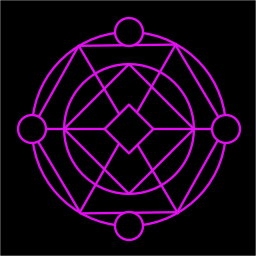
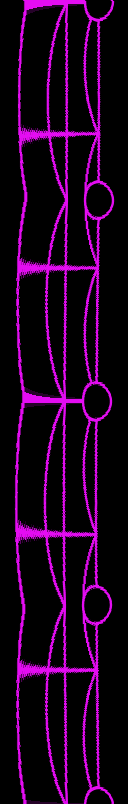

ビジュアルポイ（のパチモン）プロトタイピング
概要
コスプレ撮影でライトペインティングをやってみたくなったので道具を自作（試作）してみたまとめ
はじめに
光物を使ってコスプレ撮影をしてみたいと思っていたところ、ビジュアルポイなるものがあることを知りました。調べてみたら道具が1組40万円くらいするようで、さすがに高いと思ったのと基本的な機能だけならすぐできる（実際、実働2日で完成）と思ったので自作してみました。
ビジュアルポイ
ビジュアルポイには長さ違いでバリエーションがあります。
| バリエーション | 発光領域 | 価格(税込・2本1組) |
|---|---|---|
| Visual Poi V5 Maxi | 240px / 524mm | $2190 |
| Visual Poi V5 Classic | 160px / 349mm | $1490 |
| Visual Poi V5 Mini | 80px / 175mm | $790 |
試作するにあたっては長い Maxi を参考にしました。 https://www.lighttoys.cz/product/visual-poi-v5-maxi/
構成検討
機能試作なので以下の点を割り切りました。材料費は1本2000円くらいになりました。
- 電源は有線(USB 5V)で供給
- 発光領域は 72px / 500mm
- 汎用の WS2812B RGB LED strip (144LEDs/m 12mm幅)を使用 (参考価格 \700/m)
- ケースは透明のモールを使用 (参考価格 \174/m)
- 制御用MCUには AtomS3 Lite (ESP32-S3) を使用 (参考価格 \1227)
完成品
LEDの発光周期にあわせてポイを振ると画になります。また振ったときにずれないように、持ち手とモールのねじ穴が嵌るように設計して3Dプリントしました。
// 中心がぶれないように等速で回転させて綺麗に絵を出すなら、紐付けて振り回すのが常道なのですが、さすがに長いので屋内でやるのは危ないですし、イベントでは基本禁止なのでその辺は要検討ですね
サンプルプログラム
https://github.com/sokosun/atoms3_ws2812b_poi
poi_image_converter.py, rawdata_converter.py のスクリプトを使用して画像データ(image1.h)を生成しています。

↓ poi_image_converter.py

↓ rawdata_converter.py
image1.h
今後の課題
- LED 高密度化
- 200LEDs/m, 5mm幅 の RGB LED strip をずらして並べて 200px / 500mm にしたい
- ただし LED 数が増えるとリフレッシュレートが犠牲になる (72LED なら 400Hz, 100LED なら 337Hz, 200LED なら 168Hz) ので SPI 2並列で高速化したい
- 200LEDs/m, 5mm幅 の RGB LED strip をずらして並べて 200px / 500mm にしたい
- バッテリ内蔵化
- 持ち手に単3電池を仕込んで電池駆動できるようにしたい
- 姿勢/加速度検出＆補正
- ポイの先にセンサ積んで描画タイミングを制御したい
- 持ち手改良
- 取り回しやすい形に修正したい
なお無線で描画制御、ファイルシステム実装などは今のところ考えていません。
感想
ビジュアルポイの仕様を調べていくと、応答性・解像度・演色性・信頼性もろもろ出すための独自設計入っているなという感じがしました。写真撮影用に割り切るなら自作品でもそこそこ使えるかもしれませんが、ライブでライトペインティングやりたいなら汎用品くっつけて上っ面のソフトウェアだけ揃えてやるだけでは性能面で全然敵わないって感じでしょうか。